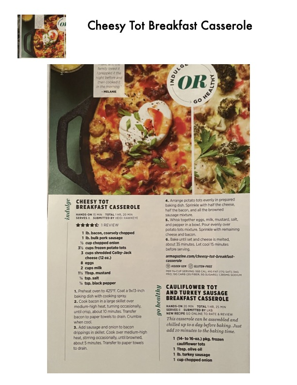

Cheesy Tot Breakfast Casserole

Original cookbook page 259
Ingredients
- 1 Ib. b: iy chopped! potato tots mixture. Sprinkle w
- 3 cups shredded Colby-Jack
- 8 eggs casserole
- 2 cups milk
- 1 Ib. turkey sausage
- 1 cup chopped onion
Instructions
- Cook bacon ina large skillet over Add sausage and onion to bacon eats up toa day before heat, stirring occasionally, until browned, 1 (14- to 16-02.) pkg. fre
Recipe #259 from collection